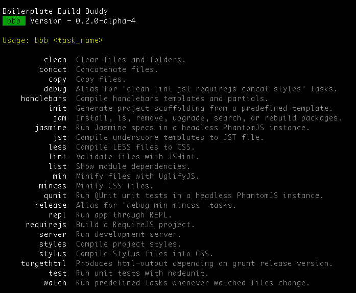

Contains Normalize.css, HTML5 defaults, helper classes, placeholder media quieries, and print styles
<!DOCTYPE html>
<!--[if lt IE 7]> <html class="no-js lt-ie9 lt-ie8 lt-ie7"> <![endif]-->
<!--[if IE 7]> <html class="no-js lt-ie9 lt-ie8"> <![endif]-->
<!--[if IE 8]> <html class="no-js lt-ie9"> <![endif]-->
<!--[if gt IE 8]><!--> <html class="no-js"> <!--<![endif]-->
div.foo { color: red; }
.ie6 div.foo { color: black; }
index.htmlMeta tags, icons, styles, modernizr
<meta charset="utf-8">
<meta http-equiv="X-UA-Compatible" content="IE=edge,chrome=1">
<title></title>
<meta name="description" content="">
<meta name="viewport" content="width=device-width">
<!-- Place favicon.ico and apple-touch-icon.png in the root directory -->
<link rel="stylesheet" href="css/normalize.css">
<link rel="stylesheet" href="css/main.css">
<script src="js/vendor/modernizr-2.6.2.min.js">
<body>
<!--[if lt IE 7]>
<p class="chromeframe">You are using an <strong>outdated</strong> browser. Please <a href="http://browsehappy.com/">upgrade your browser</a> or <a href="http://www.google.com/chromeframe/?redirect=true">activate Google Chrome Frame</a> to improve your experience.</p>
<![endif]-->
<!-- Add your site or application content here -->
<p>Hello world! This is HTML5 Boilerplate.
Plugins, libraries, analytics
<script src="//ajax.googleapis.com/ajax/libs/jquery/1.8.3/jquery.min.js"></script>
<script>window.jQuery || document.write('<script src="js/vendor/jquery-1.8.3.min.js"><\/script>')</script>
<script src="js/plugins.js"></script>
<script src="js/main.js"></script>
<!-- Google Analytics: change UA-XXXXX-X to be your site's ID. -->
<script>
var _gaq=[['_setAccount','UA-XXXXX-X'],['_trackPageview']];
(function(d,t){var g=d.createElement(t),s=d.getElementsByTagName(t)[0];
g.src=('https:'==location.protocol?'//ssl':'//www')+'.google-analytics.com/ga.js';
s.parentNode.insertBefore(g,s)}(document,'script'));
</script>
</body>
"This boilerplate is the product of much research and frustration."
Wiki/documentation on github.
Includes:
Backbone Boilerplate includes both a jasmine and qunit test suite with example unit tests for each suite
Qunit
Jasmine
All static assets of 3rd party libraries are held here
By default, H5BP CSS, jQuery, Backbone, Lodash, RequireJS
The heart of the Grunt build system. Also what the bbb tool uses for commands.
BBB is a grunt plugin/command line build tool.
